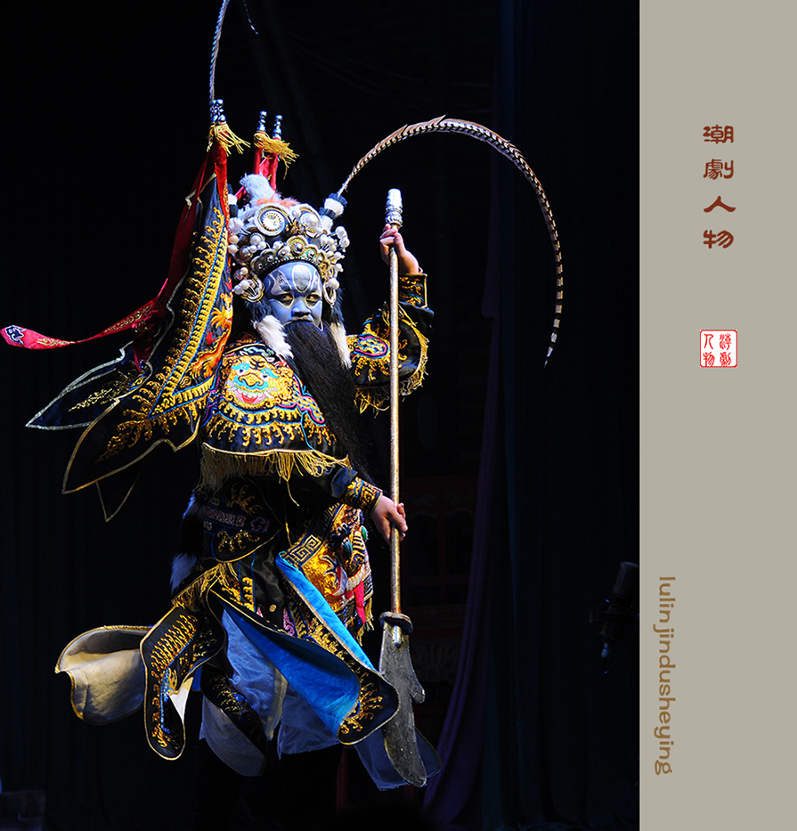
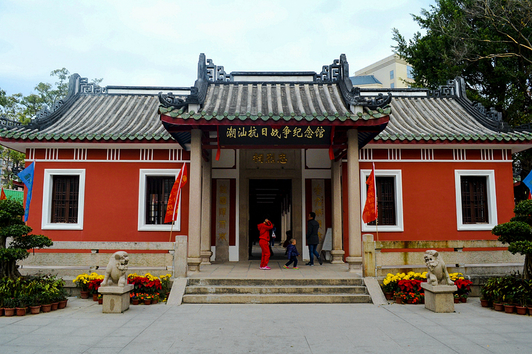
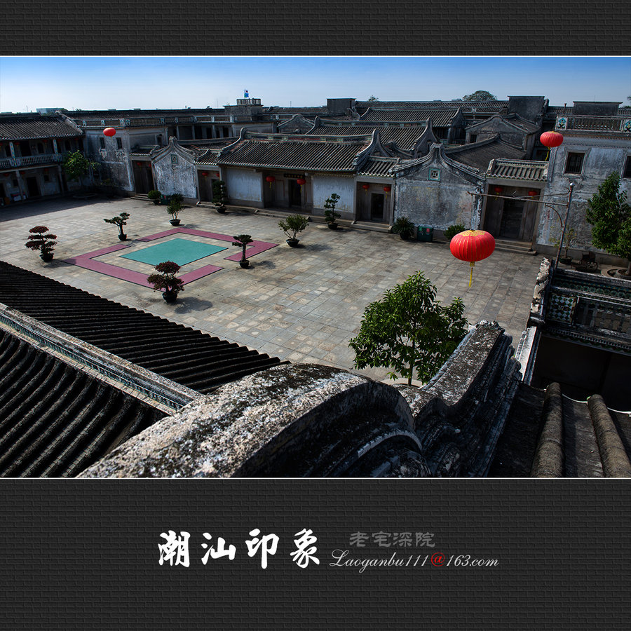
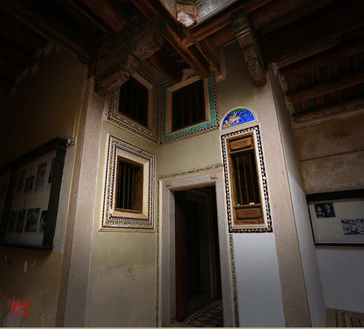

潮汕地区拥有历史悠久且独具特色的民俗文化。潮汕善堂堪称中国民间慈善事业的典范;潮州菜享誉全国，是国内最高端的菜系之一，其作为粤菜的中坚力量，有最上得厅堂菜式之称;潮剧是中国十大地方剧种之一，而迄今已有400多年历史的《重刊五色潮泉插科增入诗词北曲勾栏荔镜记戏文全集》，俗称《荔镜记》可谓是用潮州话编写而成的第一本文学巨著。在歌舞奏乐方面，所谓"北有秧歌，南有英歌"，粗犷豪迈的普宁、潮阳英歌舞是南方艺林一朵奇葩;而作为潮州音乐下的一大门类，欢庆喜人的潮州大锣鼓更是声震海内外;另饶平步马舞、澄海蜈蚣舞、乔林烟花火龙等广场表演亦颇具观赏性;民居方面，"潮汕厝，皇宫起"，独具特色的潮汕民居别有一番古典雅致
综述，纷繁荟萃的潮汕文化是数千万潮人所共有的精神财富，其起源于潮汕先民、成型于秦汉、发展于唐宋、昌盛于明清、创新于现代，是中华民族优秀传统文化的一个分支。她有中外文化兼容的特点，也有自己独特的文化体系。有自己的潮州话、潮汕戏剧(潮剧、潮州铁支木偶戏、正字戏)、潮州音乐、潮州菜、潮州工夫茶、工艺品(如潮州刺绣、潮州木雕，贝雕，石雕，抽纱，剪纸、麦秆画、瓶内画等)、潮汕民俗和潮汕特有的慈善结构(如潮汕善堂)等特色，它既是潮汕的，也是世界的。

馆藏方面，位于汕头的潮汕历史文化研究中心的侨批文物馆是国内首个侨批文物馆;潮南区的刘明通博物馆是国内首个民间博物馆，民间博物馆还有潮安的华夏历史博物馆以及其他还养在深闺待人知的如位于潮州市牌坊街太平路某家店;潮州的陈仰中美术馆是我国第一家个体陶瓷美术馆;陈舜羌木雕艺术馆、传统工艺品陈列馆、中国瓷都陈列馆、饶宗颐学术馆、淡浮文物院、陶瓷八珍楼。澄海区的塔山风景区有国内首个民间纪念馆;人物博物馆及故居有揭阳黄岐山的潮州八贤纪念馆，丁日昌博物馆，普宁"八一"纪念馆，普宁市南溪镇杨石魂故居，普宁市洪阳镇林则徐旧居(文昌阁)，揭西县曾习经故居，普宁市方方纪念馆，普宁市的庄世平博物馆，普宁市方耀故居。潮州市饶宗颐故居，潮安县林大钦故居，饶平县张竞生故居;汕头市蓬州所城翁万达故居，澄海区的唐伯元博物馆，澄海区秦牧故居，澄海郑信故里，澄海陈慈黉故居，潮阳区蔡楚生故居，潮阳区大峰祖师纪念馆，潮南区周光镐纪念馆。
  